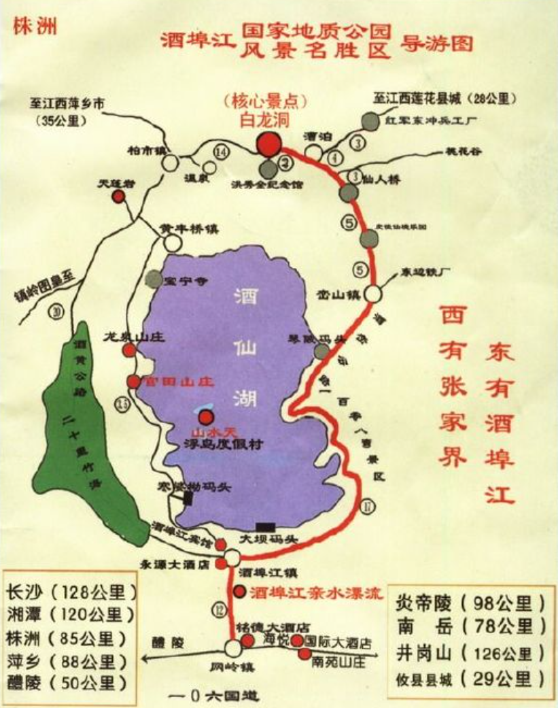

酒埠江景区两日游推荐旅游线路
第一日上午：酒仙湖景区入园→参观地质博物馆→乘豪华游艇环湖游→参观攸女像→攸女仙境民俗文化游
下午：禹林飞跃→水上乐园→环湖游道漫步→乘船返回→入住同心湖酒店→
第二日上午：宝宁寺祈福→参观宝宁寺三绝
下午：白龙洞游玩/皮佳洞漂流

酒埠江景区一日游推荐旅游线路
酒仙湖景区推荐旅游线路：
入园→参观地质博物馆→乘豪华游艇环湖游→参观攸女像→攸女仙境民俗文化游→禹林飞跃→水上乐园→环湖游道漫步→乘船返回